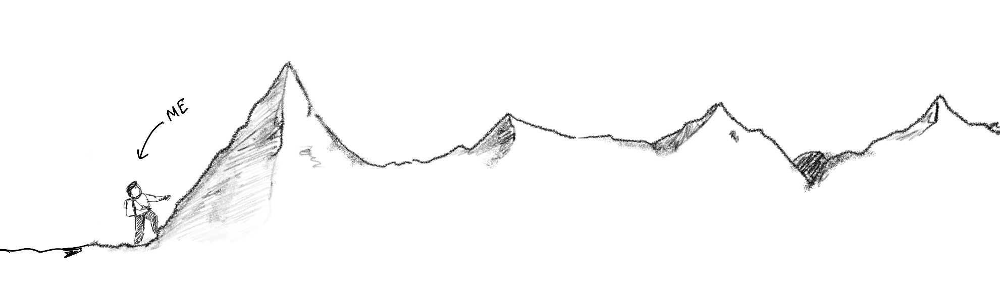

back to home
Upstox was founded in 2011 and is headquartered in Mumbai, India. It is one of India's leading trading application, committed to making investing simple, affordable, and accessible for everyone. In 2022, it reached the milestone of having 1 crore (10 million) users.
I interned with the product design team from April, 2022 till August, 2022. I worked on multiple projects with varied scopes and timelines while collaborating with the product and engineering teams.

Starting my internship at Upstox was a nerve-wracking experience.
Being new to the industry, all the trading lingo was alien to me, and
it was essential for me to get the hang of them, to be able to design
as per the trader and investor needs and perspectives — plus, it was
my first time working in a team this size, and working with the design
system and massive number of files felt overwhelming at start.
Fortunately, my teammates were incredibly supportive and patient with
me. They took the time to explain the concepts and terminologies until
I felt comfortable with them.
As time went by, I started to enjoy my work more and more. I
appreciated the camaraderie and team spirit that was evident in the
company. The Friday evening game calls were a fun way to unwind after
a long week, and I felt like part of a community. My colleagues were
always willing to help and collaborate on projects, and I learned a
lot from them. During my internship, I worked on a variety of projects
that taught me a variety of stuff. I had the opportunity to work with
quite a few people, which I felt was very integral to my learning, as
everyone has their set of tricks, whether it be the specific plugins
or the way they approach a problem, or even they document their
thought process, it was truly a very nice experience getting to learn
from some of the most talented people in the industry. Though it was
all rainbows and butterflies, there were some weeks where I felt like
“oh, shit! Where have I come.” Handing over the production files to
the engineering teams, presenting my designs in the review meeting for
the first time, they were all unique experiences that felt daunting at
first but I cherish them in retrospect.
Looking back, my time at Upstox was a positive experience,
and I would recommend the company to anyone looking for a challenging
and rewarding work environment.
The best way to build great products is to ship fast, get insights and feedback from the users and then, iterate and improve.
It is important to document your design process, so when someone else picks up the project or even yourself, at some later stage, you can understand the reason behind why certain decisions and choices were made.
Involve the engineering and product teams during the design process at regular intervals, so as everyone is on the same page in terms of expectations, goals, outcome and feasibility. Constant communication is essential as the final product is a blend of the work done by multiple teams and not just design or engineering in isolation.
There are less things as sweet as getting validation for your design decisions through data or user research.
Understand the business goals & requirements and then craft the best possible experience for the user within those constraints. If you miss out on either, it won’t be the optimal solution.